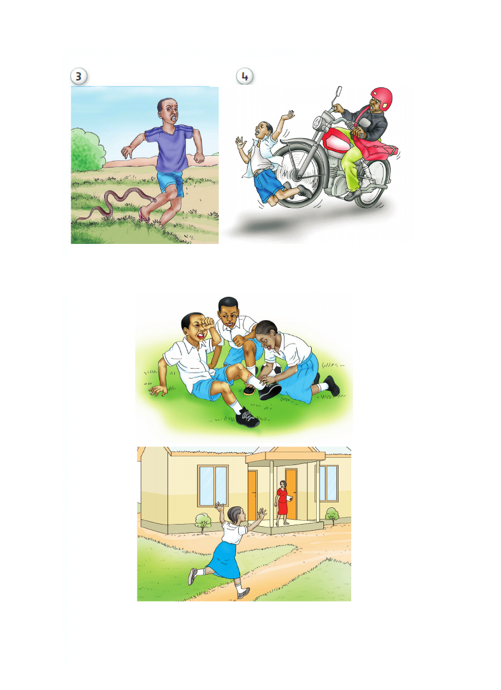

Kutoa taarifa ajali inapotokea
Tunga sentensi kueleza kinachotokea kwenye picha zifuatazo:
Kutoa taarifa ajali inapotokea Tunga sentensi kueleza kinachotokea kwenye picha zifuatazo:

Kutoa taarifa ajali inapotokea
Tunga sentensi kueleza kinachotokea kwenye picha zifuatazo: